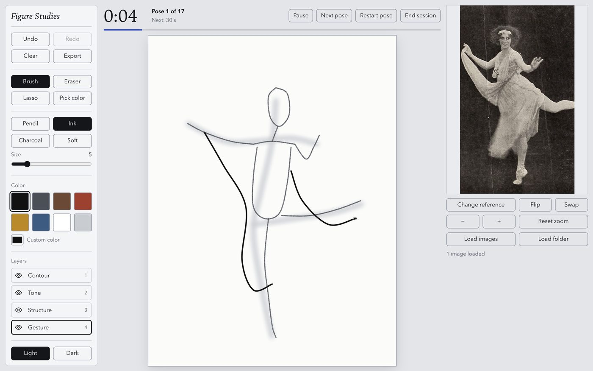
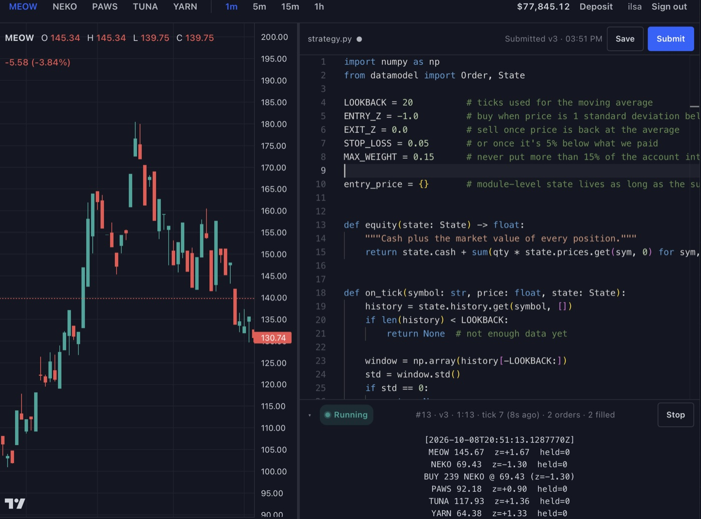
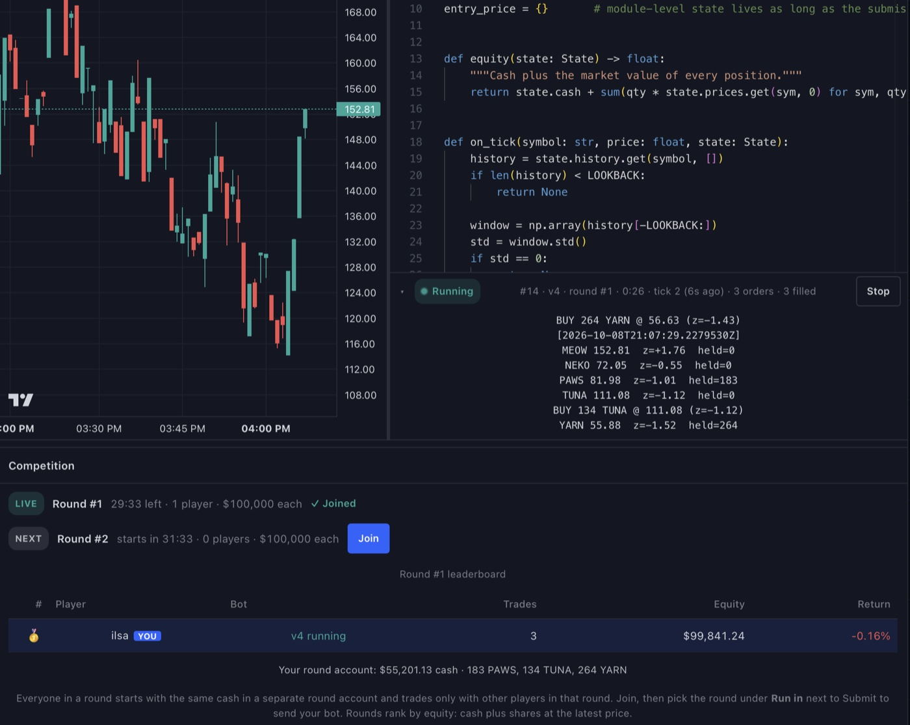
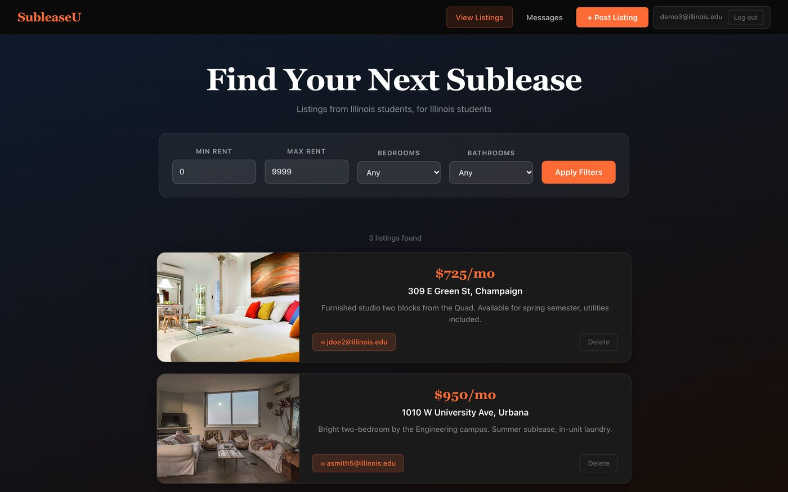
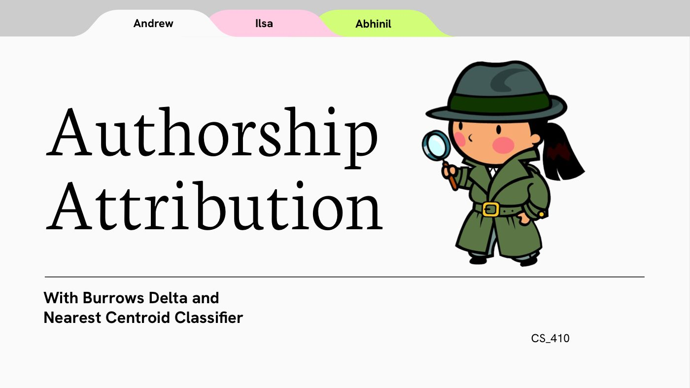
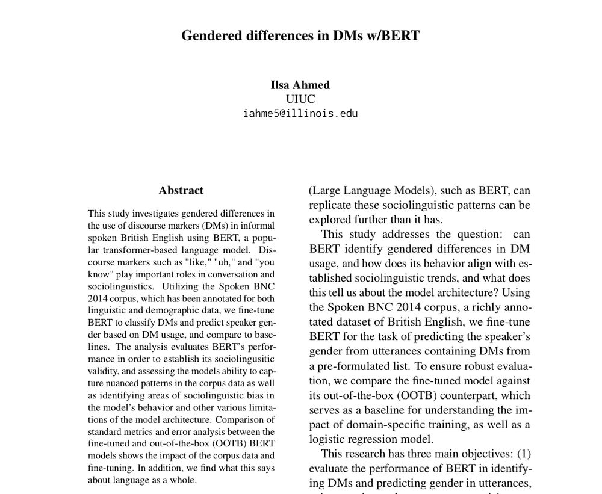

on main, just made FigureDraw
Hello.
My name is Ilsa, a recent graduate from UIUC, I enjoy coding, and design.
Log
A running record of things I've made, roughly in the order I made them.
-
FigureDraw

A free, in-browser studio for timed figure-drawing practice. Load your own reference photos, run gesture or class-style sessions, and draw on separate gesture, structure, tone and contour layers with pencil, ink and charcoal brushes, then export the result as a PNG or layered ZIP.
-
Stock Bot Battle


A multiplayer stock market where players write Python trading bots and compete in timed rounds. Everyone starts with the same cash, bots trade five cat-themed stocks against each other and a house market maker, and a live leaderboard ranks players by equity. Bots run in locked-down Docker sandboxes, and every trade is recorded in an append-only ledger.
-
AutoWiki
Generates Wikipedia-style long-form articles, adapted from Stanford's STORM method. It creates expert personas, has each one interview a web-searching agent, stores what it finds in a vector database, then outlines and writes each section from that research.
Source -
SubleaseU

An app for UIUC students to post and find subleases. Listings can be filtered by rent, bedrooms and bathrooms, posting is limited to @illinois.edu accounts, and renters can message the person who posted a listing.
Source
LLM & NLP work in Python
-
Authorship Attribution

Scrapes books from Project Gutenberg and identifies their authors from writing style, using Burrows' Delta and a nearest-centroid classifier.
Source -
BERT: Gendered Discourse Marker Usage

A study of whether BERT picks up gendered patterns in discourse markers like "like", "uh" and "you know". I fine-tuned BERT on the Spoken BNC 2014 corpus to predict speaker gender, then compared it with out-of-the-box BERT and a logistic regression baseline and analyzed where each one went wrong.
Source & paper -
Sentiment Classifier
A small sentiment classifier that rates a Movie Review as positive or negative.
Tools
What I reach for most ~
Languages
- Python
- TypeScript
- JavaScript
- C#
- Java
- SQL
Web
- React
- Next.js
- Node.js
- Fastify
- ASP.NET
- FastAPI
- Flask
Data & ML
- PostgreSQL
- MongoDB
- pandas
- NumPy
- scikit-learn
- PyTorch
AI & LLMs
- LangChain
- LangGraph
- RAG
- Vector embeddings
- OpenAI API
Infra & tools
- Docker
- GitHub Actions
- AWS
- Azure
- Vercel
- Git
- Figma
Experience
-
Software Engineer Intern
Lawly
– Present
- Contributed across the full stack of a production Next.js 15 / React 19 / TypeScript application with a Fastify + Node.js backend and PostgreSQL (NeonDB) via Drizzle ORM.
- Wrote test cases and fixed bugs tracked on a Kanban board (Plaky), verifying fixes with engineers before release.
- Worked with WorkOS authentication (OAuth + JWT sessions), Stripe Checkout/Connect, Supabase real-time messaging, AWS S3, Twilio, and Brevo; deployed on Vercel.
-
Software Engineer, Telemetry Team (Volunteer)
Illini Solar Car
–
- Built a Python asyncio pipeline ingesting 50,000+ CAN Bus sensor data points per minute into QuestDB; designed indexing and partitioning strategies to cut query latency.
- Containerized services with Docker; built GitHub Actions CI/CD for automated testing, linting, and image builds, reducing manual deployment steps.
- Designed a FastAPI REST layer and React dashboard for real-time anomaly detection on the telemetry data.
-
Software Engineer Intern
Treevah
–
- Resolved bugs through structured testing of a Node.js / React web application, improving stability ahead of releases.
- Integrated OAuth sign-in with Microsoft accounts using the Microsoft Authentication Library (MSAL).
- Built a multi-folder view letting users navigate nested folders synced from OneDrive via the Microsoft Graph API.
-
Data Annotator
Health Care Engineering Systems Center
– Present
- Label eye-gaze patterns in gaze-tracking data from children with developmental disorders to support research and model training.
Get in touch
Open to full stack dev roles, and AI/ML work or research. The fastest way to reach me is email.
ilsa.ahmedb@gmail.com